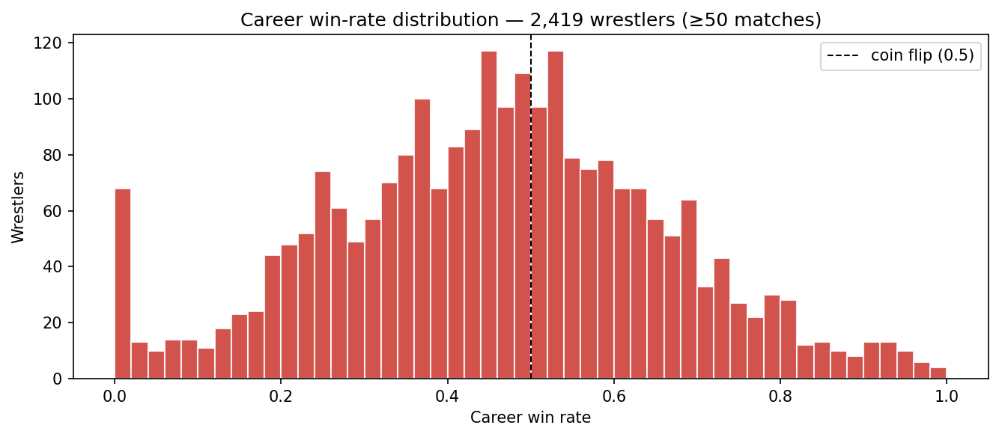

An ML system for predicting pro wrestling match outcomes — and a case study in label noise from scripted data.
40+ years of pro wrestling data, normalized into a relational schema and released under CC0. Ships as parquet/CSV tables, a denormalized match_view, and a 35-feature feature_matrix that reproduces the trained model exactly. The companion paper documents the kayfabe problem — predicting outcomes that are decided by a writers' room rather than measured by athletic competition — and reports an honest 25-point validation→test AUC gap that turns out to be a structural property of the data, not a methodological error.
Ringside Wrestling Archive — 9 relational tables, denormalized match_view, 35-feature matrix. CC0.
View on Kaggle →Same data, mirrored on HF Hub for the ML community. Auto-discovered as parquet by datasets/pandas/polars.
View on HF →Trained predictor with full model card, honest test-set metrics, and feature-importance breakdown.
View on Kaggle →20-cell tour: schema, coverage, the kayfabe twist, a leaky baseline, and the validation/test gap tease.
View on Kaggle →ETL, scraper, training pipeline, FastAPI service, Next.js front-end, this site. TypeScript + Python.
View on GitHub →Interactive Gradio demo: pick two wrestlers, set match context, get win probability with feature attribution.
Open Space →Pick two wrestlers, set the match context, and the XGBoost model returns a win probability with feature attribution. Hosted on Hugging Face Spaces; first request may take ~30 seconds if the Space has gone to sleep.
Demo not loading? Open it directly: huggingface.co/spaces/datamatters24/ringside-predictor
Pro wrestling outcomes are scripted. The result column doesn't record who's the better athlete — it records who got booked to win. That sounds like a flaw. It's actually the most interesting property of the dataset.
If outcomes were random athletic results, every wrestler's career win rate would cluster near 0.5. The empirical distribution looks nothing like that:

This shapes everything downstream: feature engineering (streak features dominate), validation strategy (random k-fold leaks signal across storyline arcs), and interpretation (the model is a booking-pattern detector, not a skill estimator). The paper walks through it in full.
Use feature_matrix.parquet for instant 35-feature, ML-ready training. Or roll your own from the source tables — the schema is documented column-by-column.
Title lineages, head-to-head records, alignment-turn timelines. Try examples/duckdb_queries.sql to get started in under a minute.
This dataset is a teaching case for ML validation under temporal autocorrelation. The val/test gap story sells itself. CC0, so use it freely.
The numeric features can't see narrative. A separate NLP-only release with cleaned match descriptions is in preparation. Watch the GitHub repo.